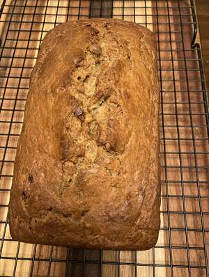

Banana Bread

Description
This is a delicious banana bread recipe
made
Ingredients
- All purpose flour
- Salt
- Butter
- Brown Sugar
- Eggs
- Bananas
Steps
- Preheat oven to 350 degrees F.
- In a large bowl, combine flour, baking soda and salt.
- In a separate bowl, cream together butter and brown sugar.
- Stir in eggs and mashed bananas until well blended.
- Bake in preheated oven for 60 to 65 minutes
Back to Top